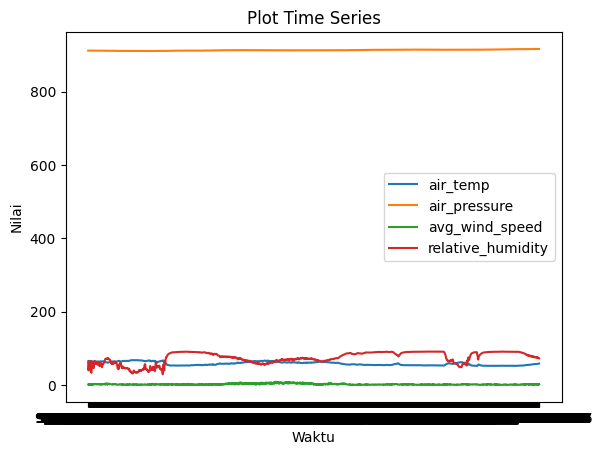
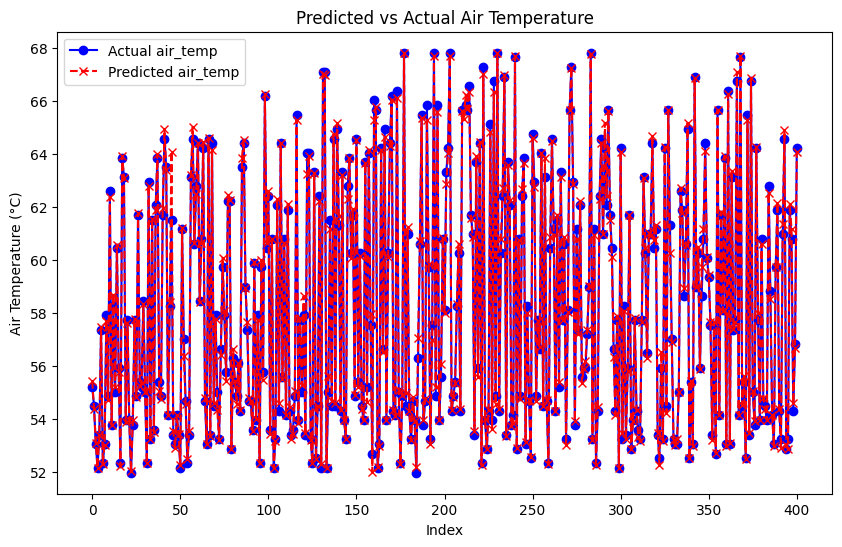

Prediction Suhu Udara#
Nama: Yudha nuur cahyo
NIM: 220411100052
Mata Kuliah: Proyek sains Data
Tujauan analisis ( Business Understanding)#
proyek ini untuk implementasi forcasting multistep dan multifariate untuk memprediksi suhu udara sebagai target peramalan dan tekanan_udara, kecepatan_angin rata-rata, kelembaban_relatif untuk menjadi data fitur yag membantu proses peramalan menggunakan metode machine learning. Prosesnya melibatkan beberapa langkah utama, mulai dari memuat data, memprosesnya, melatih model, hingga membuat prediksi.
from sklearn.preprocessing import MinMaxScaler
from sklearn.model_selection import train_test_split
from sklearn.ensemble import BaggingRegressor
from sklearn.linear_model import LinearRegression
from sklearn.metrics import mean_absolute_error, mean_squared_error
import pandas as pd
import numpy as np
import pickle
Memahami Data ( Data Undertanding)#
from google.colab import drive
drive.mount('/content/drive')
import pickle
import pandas as pd
---------------------------------------------------------------------------
KeyboardInterrupt Traceback (most recent call last)
<ipython-input-2-eea40637b52e> in <cell line: 2>()
1 from google.colab import drive
----> 2 drive.mount('/content/drive')
3 import pickle
4 import pandas as pd
/usr/local/lib/python3.10/dist-packages/google/colab/drive.py in mount(mountpoint, force_remount, timeout_ms, readonly)
98 def mount(mountpoint, force_remount=False, timeout_ms=120000, readonly=False):
99 """Mount your Google Drive at the specified mountpoint path."""
--> 100 return _mount(
101 mountpoint,
102 force_remount=force_remount,
/usr/local/lib/python3.10/dist-packages/google/colab/drive.py in _mount(mountpoint, force_remount, timeout_ms, ephemeral, readonly)
135 )
136 if ephemeral:
--> 137 _message.blocking_request(
138 'request_auth',
139 request={'authType': 'dfs_ephemeral'},
/usr/local/lib/python3.10/dist-packages/google/colab/_message.py in blocking_request(request_type, request, timeout_sec, parent)
174 request_type, request, parent=parent, expect_reply=True
175 )
--> 176 return read_reply_from_input(request_id, timeout_sec)
/usr/local/lib/python3.10/dist-packages/google/colab/_message.py in read_reply_from_input(message_id, timeout_sec)
94 reply = _read_next_input_message()
95 if reply == _NOT_READY or not isinstance(reply, dict):
---> 96 time.sleep(0.025)
97 continue
98 if (
KeyboardInterrupt:
data = pd.read_csv("/content/drive/My Drive/psd/dataset/prediksi_cuaca_permenit.csv")
data
| rowID | hpwren_timestamp | air_pressure | air_temp | avg_wind_direction | avg_wind_speed | max_wind_direction | max_wind_speed | min_wind_direction | min_wind_speed | rain_accumulation | rain_duration | relative_humidity | |
|---|---|---|---|---|---|---|---|---|---|---|---|---|---|
| 0 | 0 | 9/10/2011 0:00 | 912.3 | 64.76 | 97.0 | 1.2 | 106.0 | 1.6 | 85.0 | 1.0 | NaN | NaN | 60.5 |
| 1 | 1 | 9/10/2011 0:01 | 912.3 | 63.86 | 161.0 | 0.8 | 215.0 | 1.5 | 43.0 | 0.2 | 0.0 | 0.0 | 39.9 |
| 2 | 2 | 9/10/2011 0:02 | 912.3 | 64.22 | 77.0 | 0.7 | 143.0 | 1.2 | 324.0 | 0.3 | 0.0 | 0.0 | 43.0 |
| 3 | 3 | 9/10/2011 0:03 | 912.3 | 64.40 | 89.0 | 1.2 | 112.0 | 1.6 | 12.0 | 0.7 | 0.0 | 0.0 | 49.5 |
| 4 | 4 | 9/10/2011 0:04 | 912.3 | 64.40 | 185.0 | 0.4 | 260.0 | 1.0 | 100.0 | 0.1 | 0.0 | 0.0 | 58.8 |
| ... | ... | ... | ... | ... | ... | ... | ... | ... | ... | ... | ... | ... | ... |
| 2003 | 2003 | 9/11/2011 9:23 | 916.8 | 57.92 | 207.0 | 1.8 | 213.0 | 2.2 | 200.0 | 1.5 | 0.0 | 0.0 | 73.8 |
| 2004 | 2004 | 9/11/2011 9:24 | 916.8 | 57.92 | 174.0 | 0.7 | 239.0 | 1.5 | 129.0 | 0.4 | 0.0 | 0.0 | 72.9 |
| 2005 | 2005 | 9/11/2011 9:25 | 916.9 | 58.10 | 177.0 | 1.9 | 196.0 | 2.2 | 140.0 | 1.4 | 0.0 | 0.0 | 73.8 |
| 2006 | 2006 | 9/11/2011 9:26 | 916.8 | 58.28 | 160.0 | 1.1 | 175.0 | 1.5 | 122.0 | 0.6 | 0.0 | 0.0 | 73.2 |
| 2007 | 2007 | 9/11/2011 9:27 | 916.8 | 58.46 | 182.0 | 1.7 | 192.0 | 2.2 | 173.0 | 1.1 | 0.0 | 0.0 | 72.6 |
2008 rows × 13 columns
Praproses data ( Preprocessing data)#
# Now you can access the columns by their names
data_filtered = data[['hpwren_timestamp', 'air_temp', 'air_pressure', 'avg_wind_speed', 'relative_humidity']]
data_filtered
| hpwren_timestamp | air_temp | air_pressure | avg_wind_speed | relative_humidity | |
|---|---|---|---|---|---|
| 0 | 9/10/2011 0:00 | 64.76 | 912.3 | 1.2 | 60.5 |
| 1 | 9/10/2011 0:01 | 63.86 | 912.3 | 0.8 | 39.9 |
| 2 | 9/10/2011 0:02 | 64.22 | 912.3 | 0.7 | 43.0 |
| 3 | 9/10/2011 0:03 | 64.40 | 912.3 | 1.2 | 49.5 |
| 4 | 9/10/2011 0:04 | 64.40 | 912.3 | 0.4 | 58.8 |
| ... | ... | ... | ... | ... | ... |
| 2003 | 9/11/2011 9:23 | 57.92 | 916.8 | 1.8 | 73.8 |
| 2004 | 9/11/2011 9:24 | 57.92 | 916.8 | 0.7 | 72.9 |
| 2005 | 9/11/2011 9:25 | 58.10 | 916.9 | 1.9 | 73.8 |
| 2006 | 9/11/2011 9:26 | 58.28 | 916.8 | 1.1 | 73.2 |
| 2007 | 9/11/2011 9:27 | 58.46 | 916.8 | 1.7 | 72.6 |
2008 rows × 5 columns
import matplotlib.pyplot as plt
# Visualisasi data time series
for column in ['air_temp', 'air_pressure', 'avg_wind_speed', 'relative_humidity']:
plt.plot(data_filtered['hpwren_timestamp'], data_filtered[column], label=column)
plt.title('Plot Time Series')
plt.xlabel('Waktu')
plt.ylabel('Nilai')
plt.legend() # Add a legend to differentiate the lines
plt.show()

Sliding Window#
Membuat fitur dengan pendekatan sliding window dan menentukan target prediksi.
def create_sliding_window(data_filtered, window_size, target_column):
X, y = [], []
for i in range(len(data_filtered) - window_size):
# Ambil fitur dalam window
features = data_filtered.iloc[i:i+window_size].values # Semua fitur
X.append(features)
# Ambil target (nilai air_temp di waktu berikutnya)
target = data_filtered.iloc[i + window_size][target_column]
y.append(target)
return np.array(X), np.array(y)
# Ukuran window
window_size = 3
# Buat fitur (X) dan target (y)
X, y = create_sliding_window(data_filtered[["air_temp", "air_pressure", "avg_wind_speed", "relative_humidity"]],
window_size=window_size,
target_column="air_temp")
print("Shape X:", X.shape)
print("Shape y:", y.shape)
Shape X: (2005, 3, 4)
Shape y: (2005,)
X, y
(array([[[6.476e+01, 9.123e+02, 1.200e+00, 6.050e+01],
[6.386e+01, 9.123e+02, 8.000e-01, 3.990e+01],
[6.422e+01, 9.123e+02, 7.000e-01, 4.300e+01]],
[[6.386e+01, 9.123e+02, 8.000e-01, 3.990e+01],
[6.422e+01, 9.123e+02, 7.000e-01, 4.300e+01],
[6.440e+01, 9.123e+02, 1.200e+00, 4.950e+01]],
[[6.422e+01, 9.123e+02, 7.000e-01, 4.300e+01],
[6.440e+01, 9.123e+02, 1.200e+00, 4.950e+01],
[6.440e+01, 9.123e+02, 4.000e-01, 5.880e+01]],
...,
[[5.774e+01, 9.168e+02, 4.000e-01, 7.430e+01],
[5.792e+01, 9.168e+02, 1.800e+00, 7.380e+01],
[5.792e+01, 9.168e+02, 7.000e-01, 7.290e+01]],
[[5.792e+01, 9.168e+02, 1.800e+00, 7.380e+01],
[5.792e+01, 9.168e+02, 7.000e-01, 7.290e+01],
[5.810e+01, 9.169e+02, 1.900e+00, 7.380e+01]],
[[5.792e+01, 9.168e+02, 7.000e-01, 7.290e+01],
[5.810e+01, 9.169e+02, 1.900e+00, 7.380e+01],
[5.828e+01, 9.168e+02, 1.100e+00, 7.320e+01]]]),
array([64.4 , 64.4 , 63.5 , ..., 58.1 , 58.28, 58.46]))
Modelling#
Membagi data menjadi training dan testing, melatih model menggunakan RandomForestRegressor, dan membuat prediksi.
from sklearn.model_selection import train_test_split
from sklearn.ensemble import RandomForestRegressor
# Split data menjadi training dan testing
X_train, X_test, y_train, y_test = train_test_split(X.reshape(X.shape[0], -1), y, test_size=0.2, random_state=42)
model = RandomForestRegressor(n_estimators=100, random_state=42)
model.fit(X_train, y_train)
y_pred = model.predict(X_test)
# Prediksi
y_pred = model.predict(X_test)
Evaluasi#
from sklearn.metrics import mean_absolute_error, mean_squared_error
import numpy as np
# Menghitung MAE, RMSE, MAPE
mae = mean_absolute_error(y_test, y_pred)
rmse = np.sqrt(mean_squared_error(y_test, y_pred))
mape = np.mean(np.abs((np.array(y_test) - np.array(y_pred)) / np.array(y_test))) * 100
print(f"MAE: {mae}")
print(f"RMSE: {rmse}")
print(f"MAPE: {mape}%")
MAE: 0.1627406483790514
RMSE: 0.26138370968897523
MAPE: 0.2755744822249393%
Model memiliki performa yang cukup baik karena kesalahannya kecil (di bawah 1°C dan kurang dari 1% kesalahan relatif). Hal ini menunjukkan bahwa model mampu memprediksi suhu udara dengan tingkat akurasi yang tinggi.
Visualisasi Hasil Prediksi#
# Visualisasi hasil prediksi vs nilai asli
plt.figure(figsize=(10, 6))
plt.plot(y_test, label="Actual air_temp", color="blue", marker="o")
plt.plot(y_pred, label="Predicted air_temp", color="red", linestyle="--", marker="x")
plt.title("Predicted vs Actual Air Temperature")
plt.xlabel("Index")
plt.ylabel("Air Temperature (°C)")
plt.legend()
plt.show()

import joblib
# Simpan model
joblib.dump(model, 'air_temp_predictor_model.pkl')
# Untuk memuat model di masa depan:
# loaded_model = joblib.load('air_temp_predictor_model.pkl')
['air_temp_predictor_model.pkl']
melakukan uji coba pada model yang di latih untuk melakukan prediksi#
# Fungsi untuk melakukan prediksi 3 menit ke depan
def predict_3_minute_ahead(model, data, window_size):
predictions = []
# current_input = data[-window_size:].drop(columns=["air_temp"]).values # Ambil window terakhir sebagai input
current_input = data[["air_temp", "air_pressure", "avg_wind_speed", "relative_humidity"]][-window_size:].values
for _ in range(3): # Prediksi selama 3 menit berturut-turut
# Prediksi untuk menit ini
predicted_temp = model.predict(current_input.reshape(1, -1))
predictions.append(predicted_temp[0])
# Update input window dengan prediksi
# Untuk menit berikutnya, kita tambahkan prediksi ke dalam window dan geser
# Create a new row with the predicted temperature
new_row = pd.DataFrame([[predicted_temp[0], data["air_pressure"].iloc[-1], data["avg_wind_speed"].iloc[-1], data["relative_humidity"].iloc[-1]]],
columns=["air_temp", "air_pressure", "avg_wind_speed", "relative_humidity"])
# Append the new row to the data DataFrame
data = pd.concat([data, new_row], ignore_index=True)
# Update current_input for the next prediction
current_input = data[["air_temp", "air_pressure", "avg_wind_speed", "relative_humidity"]][-window_size:].values
return predictions
# Prediksi 3 menit ke depan
predicted_3_minute = predict_3_minute_ahead(model, data.copy(), window_size) # Create a copy of data to avoid modifying the original DataFrame
# Tampilkan hasil prediksi
print(f"Prediksi 3 menit ke depan: {predicted_3_minute}")
Prediksi 3 menit ke depan: [58.53560000000002, 58.54460000000003, 58.47800000000002]
Hasil Deploy#
ini adalah hasil deploy untuk prediksi ini : https://huggingface.co/spaces/yudhanuurcahyo/psd_prediksi_tugas3